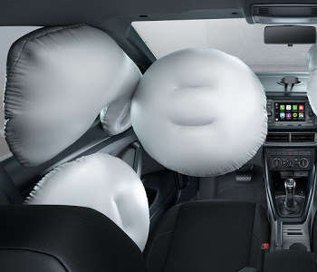

Home Dev Comprar Links
Home |
O T-Cross será o primeiro modelo em seu segmento no Brasil a oferecer o “Manual Cognitivo”, que usa a tecnologia IBM Watson para responder ao motorista questões sobre o veículo, incluindo informações contidas no manual do carro. Mais que um SUV. Um SUVW.
|
O pacote Design View agrega bancos de couro com detalhes na cor “Marrakesh Brown” e apliques decorativos no painel com detalhes na cor bronze namíbia. |
||
|  |
O T-cross contem 6 airbags, sendo frontal, lateral para a cabeça e cortina lateral, tanto para o motorista quanto para o passageiro. |
|
|
O App-Connect, instalado no carro, disponível para o Composition Touch e Discover Media, torna o seu dia-a-dia mais prático e agradável com as principais funções do seu smartphone acessíveis por voz e na tela do sistema infotainment. |
Home Dev Comprar Links